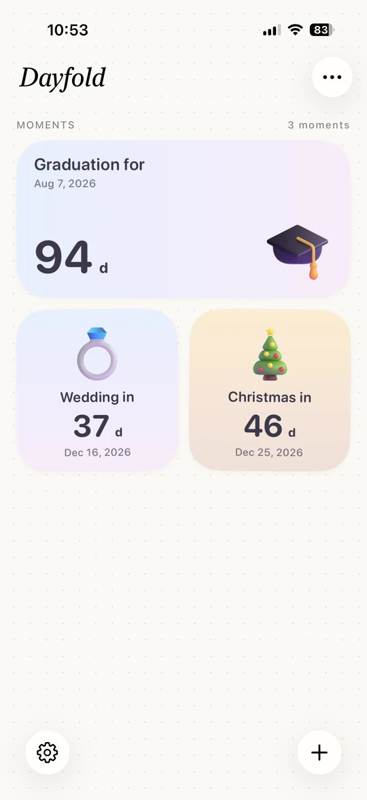

Count Days Together — and Anniversaries — on iPhone
Dayfold can do both sides of a relationship date: count up the days since you met (or since a first date), and count down the days until an anniversary or a wedding. The App Store subtitle is “Count Up & Days Since,” and the store copy uses “the day you met” as an example of a moment worth keeping. You add either moment to a Lock Screen or Home Screen widget. What we do not have evidence for is a couple-only layout, dual portraits, or an in-app photo of the two of you — you name the moment yourself and pick card artwork (including emoji). Yearly repeats are supported for anniversaries.

Quick facts
| Days together | Set the date you met (a past date) — Dayfold counts the days since |
|---|---|
| Upcoming anniversary or wedding | Set the future date — Dayfold counts the days left |
| Widgets | Small or medium Home Screen; Lock Screen |
| System | iPhone, iOS 17 or later |
| Each year | Yearly repeats for anniversaries (and birthdays) |
| Not verified | Couple-specific layout, two-person portraits, or photo backgrounds |
| Price | Free to download; four active moments free; Dayfold Pro optional (monthly or one-time Lifetime) |
Days together, and days until
A “couple days together counter” and a “relationship anniversary widget” sound like two apps. In Dayfold they are two dates.
For days together, create a moment with a past date — the day you met, or the official anniversary start, whichever you actually want to count. Dayfold will count up. Shipping UI shows that as a title plus “for” and a day count (in one official screenshot, “Graduation for 94 d”). The Lock Screen wording we have documented after a date has passed is “N days ago.” Name the moment whatever you use as a couple (“Together,” “First date,” your names) — there is no required template name.
For an anniversary that is still ahead, or a wedding day, create a second moment with a future date. That one counts down, in the same widget style as the hero screenshot (“Wedding in 33 d”). The free plan allows four active moments, so a days-together card and a countdown card can sit side by side.

How to add the widgets
- Download Dayfold and open it once so iOS lists its widgets.
- Tap +. On Create a Moment, enter a name and the date.
- For days together, pick the date you met. For an anniversary you are counting down to, pick the upcoming date.
- Optional: mark Primary if this moment should be the default widget. Optional: turn on Reminders, or Repeat for an anniversary that returns each year.
- Save, and choose a card style if asked. Emoji, Flip Calendar and Ticket are free; other styles, including Retro LCD in the official screenshot, are Pro.
- Add a Lock Screen widget: touch and hold the Lock Screen, tap Customize, tap Add Widgets, and choose Dayfold. On iOS 17 or later, tap the widget to select this moment if needed.
- Optionally add a small or medium Home Screen widget from the Home Screen widget gallery.


If you add both a count-up and a countdown, use two widgets, or pin one as Primary and select the other on a second widget.
Anniversaries every year
Dayfold can repeat anniversaries yearly, which is the store-documented way to keep a wedding anniversary or the date you met without creating a new moment each year. Milestone reminders at 30, 100, 365 or 1,000 days are available if you want a nudge at 100 days or at one year; on-the-day, 30-day and 100-day reminders are free, and advance reminders plus extra milestones are Pro.
A wedding countdown is the same future-date tool. For a fuller walkthrough of wedding and trip dates, see Wedding or vacation countdown.
What we are not claiming
We do not have a verified “couple widget” layout with two photos, a heart frame, or a shared album. Artwork in the current product is card styles and a Fluent emoji collection you pick yourself. If you want the card to say “days together,” that comes from the name and date you enter, not from a hidden couple mode.
Free and optional Pro
No account is required. Content stays on your iPhone; cloud sync is not available. Four active moments and three card styles are free. Dayfold Pro is optional, monthly or as a one-time Lifetime purchase.
FAQ
Can Dayfold count the days we’ve been together?
Yes. Create a moment with the date you met (a past date). Dayfold counts how many days have passed and can show that number on a Home Screen or Lock Screen widget.
Can I also count down to an anniversary or wedding?
Yes. Create a second moment with the future date. Dayfold will show how many days remain. The free plan allows four active moments.
Does Dayfold have a special couple layout or photo widget?
Not that we can verify. You name the moment yourself and choose a card style and artwork. There is no confirmed dual-portrait or couple-only widget.
Will an anniversary repeat every year?
Yes. Dayfold can repeat anniversaries yearly, so you do not have to create a new moment each year.
Is Dayfold free?
Yes. Dayfold is free to download. You can keep four active moments and use three card styles without paying. Dayfold Pro is an optional monthly plan or one-time Lifetime purchase.